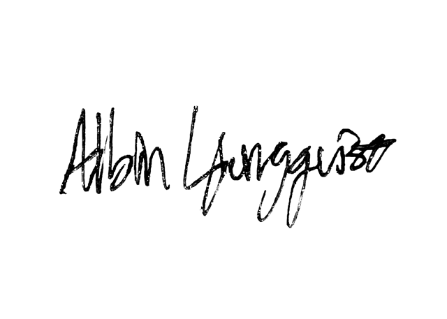

bio/cv
Hello, I'm Albin.
I'm an audiovisual producer from Finland based in Helsinki. I've been working in the media field since 2018 and currently studying film at Arcada University of Applied sciences.
I believe that the best results often emerge from combining experience with fresh ideas. As a young media professional, I can bring something new to the table, trying out new ideas, give alternative perspectives, and follow up on the latest trends in audiovisual production.
foto by Viktor Lindblad
- curriculum_vitae.pdf ♥